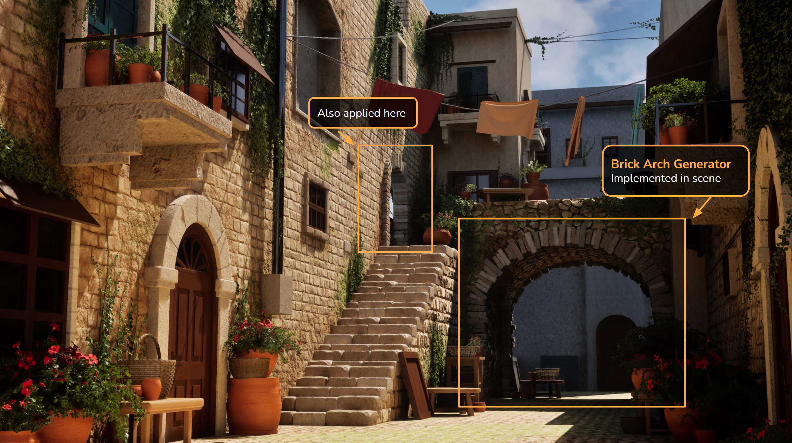

Designed an artist-facing Maya tool to procedurally place bricks along different arch profiles, reducing repetitive manual placement and adding silhouette variation to modular architecture. Developed through an LLM-assisted Python workflow and used in the final European Alleyway environment.
Applied in Scene
